pacman::p_load(sf,tmap,tidyverse,spatstat,raster,sparr,spdep,sfdep)Take Home Exercise 3
Reading data
boundary_data: This object loads the administrative boundary data for Vietnam from a geospatial source file, specifically for the first administrative level (likely provinces). The data will enable geographic plotting and spatial analyses of provinces across Vietnam. Thest_readfunction from thesfpackage is used here to load this shapefile, making it suitable for spatial analysis tasks such as mapping or integrating spatial features with aspatial data.PCI Data (
PCI_2012_datatoPCI_2022_data): These objects load Provincial Competitiveness Index (PCI) data for Vietnam for each year from 2012 to 2022. Each CSV file contains aspatial (non-geographic) data that likely includes indicators of economic performance, governance quality, business environment, and investment appeal at the provincial level. By reading the data for each year separately, it prepares for a time-series analysis of PCI metrics across provinces, allowing insights into trends or patterns in competitiveness and governance over time.
This setup aims to combine spatial and aspatial data for a comprehensive analysis of Vietnam’s provincial competitiveness over a decade.
# Import administrative boundary data for vietnam
boundary_data <- st_read(dsn="data/geospatial",
layer = "vnm_admbnda_adm1_gov_20201027")Reading layer `vnm_admbnda_adm1_gov_20201027' from data source
`C:\edwing444\IS415-GAA\Take_Home_Ex\Take_home_ex3\data\geospatial'
using driver `ESRI Shapefile'
Simple feature collection with 63 features and 16 fields
Geometry type: MULTIPOLYGON
Dimension: XY
Bounding box: xmin: 102.144 ymin: 7.180931 xmax: 117.8355 ymax: 23.39221
Geodetic CRS: WGS 84PCI_2012_data <- read.csv("data/aspatial/2012.csv")
PCI_2013_data <- read.csv("data/aspatial/2013.csv")
PCI_2014_data <- read.csv("data/aspatial/2014.csv")
PCI_2015_data <- read.csv("data/aspatial/2015.csv")
PCI_2016_data <- read.csv("data/aspatial/2016.csv")
PCI_2017_data <- read.csv("data/aspatial/2017.csv")
PCI_2018_data <- read.csv("data/aspatial/2018.csv")
PCI_2019_data <- read.csv("data/aspatial/2019.csv")
PCI_2020_data <- read.csv("data/aspatial/2020.csv")
PCI_2021_data <- read.csv("data/aspatial/2021.csv")
PCI_2022_data <- read.csv("data/aspatial/2022.csv")Cleaning data
This code refines the administrative boundary data by performing two main actions:
Selecting and Dropping Columns: It removes several unnecessary columns from
boundary_data, including administrative codes, alternative names, and validity dates, to keep only essential information. This reduces the dataset size and complexity, making it more manageable and focused on what is likely required for analysis.Renaming a Column: It renames the
ADM1_ENcolumn toprovince. This renaming enhances readability, making it clearer that this column represents the province name in English.
Overall, these changes prepare the boundary_data for integration with other datasets (like the PCI data), focusing only on necessary columns for analysis.
boundary_data <- boundary_data %>%
dplyr::select(-ADM1_VI,-ADM1_REF,-ADM1ALT1EN,-ADM1ALT2EN,-ADM1ALT1VI,-ADM1ALT2EN, -ADM1ALT2VI, -ADM0_VI,-ADM0_EN,-ADM0_PCODE,-date,-validOn,-validTo,-ADM1_PCODE) %>%
rename(province = ADM1_EN)These codes processes the PCI data for 2012-2022 by:
Dropping Unnecessary Columns: It removes various unnamed columns (
X,X.1,X.2, etc.) and theNocolumn, which may contain indices or irrelevant data. These columns might have been automatically generated during data export or are not needed for analysis.Renaming the Province Column: The column
Provinceis renamed toprovinceto match the column name inboundary_data. Consistently naming this key column across datasets enables smoother data merging or joining, especially when linking the PCI data with the spatial boundary data.
This preparation step ensures the PCI data is streamlined and ready for integration with other datasets in the analysis.
PCI_2012_data <- PCI_2012_data %>%
dplyr::select(-X,-X.1,-X.2,-X.3,-X.4,-X.5, -X.6, -X.7,-X.8,-X.9,-X.10,-No) %>%
rename(province = Province)PCI_2013_data <- PCI_2013_data %>%
dplyr::select(-X,-X.1,-X.2,-X.3,-X.4,-X.5, -X.6, -X.7,-X.8,-X.9,-PCI.2013.ranking,-No) %>%
rename(province = Province)PCI_2014_data <- PCI_2014_data %>%
dplyr::select(-X,-X.1,-X.2,-X.3,-X.4,-X.5, -X.6, -X.7,-X.8,-X.9,-PCI.2014.ranking,-No) %>%
rename(province = Province)PCI_2015_data <- PCI_2015_data %>%
dplyr::select(-X,-X.1,-X.2,-X.3,-X.4,-X.5, -X.6, -X.7,-X.8,-X.9,-PCI.2015.ranking,-No) %>%
rename(province = Province)PCI_2016_data <- PCI_2016_data %>%
dplyr::select(-X,-X.1,-X.2,-X.3,-X.4,-X.5, -X.6, -X.7,-X.8,-X.9,-X.10,-X.11,-PCI.2016.ranking,-No) %>%
rename(province = Province)PCI_2017_data <- PCI_2017_data %>%
dplyr::select(-Rank) %>%
rename(province = Province)PCI_2018_data <- PCI_2018_data %>%
dplyr::select(-Rank) %>%
rename(province = Province)PCI_2019_data <- PCI_2019_data %>%
dplyr::select(-Rank) %>%
rename(province = Province)PCI_2020_data <- PCI_2020_data %>%
rename(province = Province)PCI_2021_data <- PCI_2021_data %>%
rename(province = Province)PCI_2022_data <- PCI_2022_data %>%
rename(province = Province)Joining data
This code joins the spatial boundary data and PCI data for 2012-2022 by:
Merging Data: The
left_joinfunction mergesboundary_datawith PCI data using theprovincecolumn as a common key. This results in a new PCI dataset that includes spatial information (geometry) fromboundary_dataalong with the PCI indicators for 2012-2022. Theleft_joinensures that all records fromboundary_dataare kept, and matching rows from PCI data are added.Removing Rows with Missing Data:
drop_naremoves any rows withNAvalues from PCI data, likely to ensure that only provinces with complete PCI data and spatial information are retained for further analysis. This prevents issues that could arise from missing values during analysis or visualization.
This approach creates a complete dataset with both spatial and PCI data for 2012-2022, facilitating spatial analysis and mapping of competitiveness indicators across Vietnamese provinces.
PCI_2012_data <- boundary_data %>%
left_join(PCI_2012_data, by = "province")
PCI_2012_data <- drop_na(PCI_2012_data)PCI_2013_data <- boundary_data %>%
left_join(PCI_2013_data, by = "province")
PCI_2013_data <- drop_na(PCI_2013_data)PCI_2014_data <- boundary_data %>%
left_join(PCI_2014_data, by = "province")
PCI_2014_data <- drop_na(PCI_2014_data)PCI_2015_data <- boundary_data %>%
left_join(PCI_2015_data, by = "province")
PCI_2015_data <- drop_na(PCI_2015_data)PCI_2016_data <- boundary_data %>%
left_join(PCI_2016_data, by = "province")
PCI_2016_data <- drop_na(PCI_2016_data)PCI_2017_data <- boundary_data %>%
left_join(PCI_2017_data, by = "province")
PCI_2017_data <- drop_na(PCI_2017_data)PCI_2018_data <- boundary_data %>%
left_join(PCI_2018_data, by = "province")
PCI_2018_data <- drop_na(PCI_2018_data)PCI_2019_data <- boundary_data %>%
left_join(PCI_2019_data, by = "province")
PCI_2019_data <- drop_na(PCI_2019_data)PCI_2020_data <- boundary_data %>%
left_join(PCI_2020_data, by = "province")
PCI_2020_data <- drop_na(PCI_2020_data)PCI_2021_data <- boundary_data %>%
left_join(PCI_2021_data, by = "province")
PCI_2021_data <- drop_na(PCI_2021_data)PCI_2022_data <- boundary_data %>%
left_join(PCI_2022_data, by = "province")
PCI_2022_data <- drop_na(PCI_2022_data)Preparing and Computing Data for Global Moran I
This code prepares a spatial weights matrix using Queen contiguity to model spatial relationships between provinces in the PCI dataset:
Calculate Centroids:
st_centroid(st_geometry(PCI_2012_data))computes the centroids of each province’s polygon. While centroids aren’t directly needed for creating a contiguity matrix, they can be useful for visualizations or other analyses.Create Neighbor List Using Queen Contiguity:
poly2nb(PCI_2012_data, queen = TRUE)establishes a neighbors list where provinces sharing a border are considered neighbors (Queen contiguity). This approach is inclusive, considering any shared edge or corner between polygons as a connection.Convert to Spatial Weights List:
nb2listw(nb_global_2012, style = "W")transforms the neighbors list (nb_global_2012) into a spatial weights matrix (lw_global_2012). Thestyle = "W"parameter row-standardizes the weights, meaning each row sums to 1, providing relative influence among neighbors and helping avoid scale issues in spatial analysis.
This setup is crucial for spatial econometric models and for analyzing spatial autocorrelation, as it defines how each province relates to its neighbors.
# Step 1: Create spatial weights matrix (Queen Contiguity)
coords_global_2012 <- st_centroid(st_geometry(PCI_2012_data)) # Use centroids of polygons
nb_global_2012 <- poly2nb(PCI_2012_data, queen = TRUE) # Create neighbors list using queen contiguity
lw_global_2012 <- nb2listw(nb_global_2012, style = "W") # Convert to weights list (row-standardized)#covert to numeric for PCI 2012
PCI_2012_data$PCI.2012 <- as.numeric(PCI_2012_data$PCI.2012)
# Step 2: Compute Global Moran's I
global_moran_2012 <- moran.test(PCI_2012_data$PCI.2012, lw_global_2012)
# Step 3: Print the results
print(global_moran_2012)
Moran I test under randomisation
data: PCI_2012_data$PCI.2012
weights: lw_global_2012
Moran I statistic standard deviate = 1.0588, p-value = 0.1448
alternative hypothesis: greater
sample estimates:
Moran I statistic Expectation Variance
0.080655874 -0.017543860 0.008601753 Moran’s I statistic: The Moran’s I statistic is 0.0807, a positive value indicating weak positive spatial autocorrelation. This suggests that locations with similar PCI Scores in 2012 show a slight tendency to cluster geographically, but the effect is minimal.
Expectation: The expected value of Moran’s I under the null hypothesis of no spatial autocorrelation is -0.0175, which reflects what would be expected in a random spatial pattern.
Variance: The variance of the Moran’s I statistic is 0.00860, which helps in assessing the significance of the observed Moran’s I.
Standard deviate (Z-score): The Z-score of 1.0588 indicates that the observed Moran’s I statistic is about 1.06 standard deviations above the expected value under the null hypothesis. This suggests a slight presence of spatial clustering, though not substantial.
p-value: The p-value is 0.1448, which is higher than the conventional significance level of 0.05, meaning that the result is not statistically significant.
Conclusion:
The Moran’s I test for 2012 indicates weak positive spatial autocorrelation, but with a p-value of 0.1448, the result is not statistically significant. This suggests that there is insufficient evidence to reject the null hypothesis of no spatial autocorrelation. Therefore, the slight clustering of similar PCI Scores in 2012 is not strong enough to be considered statistically significant.
# Step 1: Create spatial weights matrix (Queen Contiguity)
coords_global_2013 <- st_centroid(st_geometry(PCI_2013_data)) # Use centroids of polygons
nb_global_2013 <- poly2nb(PCI_2013_data, queen = TRUE) # Create neighbors list using queen contiguity
lw_global_2013 <- nb2listw(nb_global_2013, style = "W") # Convert to weights list (row-standardized#covert to numeric for PCI 2013
PCI_2013_data$PCI.2013 <- as.numeric(PCI_2013_data$PCI.2013)
# Step 2: Compute Global Moran's I
global_moran_2013 <- moran.test(PCI_2013_data$PCI.2013, lw_global_2013)
# Step 3: Print the results
print(global_moran_2013)
Moran I test under randomisation
data: PCI_2013_data$PCI.2013
weights: lw_global_2013
Moran I statistic standard deviate = 0.34859, p-value = 0.3637
alternative hypothesis: greater
sample estimates:
Moran I statistic Expectation Variance
0.015240668 -0.017857143 0.009015275 Moran’s I statistic: The Moran’s I statistic is 0.0152, which is very close to zero, indicating an almost random spatial distribution of PCI Scores in 2013. This suggests little to no spatial autocorrelation, meaning that similar PCI Scores are not clustered geographically in any significant way.
Expectation: The expected value of Moran’s I under the null hypothesis of no spatial autocorrelation is -0.0179, consistent with what would be seen in a random spatial pattern.
Variance: The variance of the Moran’s I statistic is 0.0090, which is used to assess the statistical significance of the observed Moran’s I value.
Standard deviate (Z-score): The Z-score of 0.3486 indicates that the observed Moran’s I is close to the expected value under the null hypothesis, further suggesting little to no spatial clustering.
p-value: The p-value is 0.3637, which is considerably above the common significance level of 0.05. This indicates that the result is not statistically significant.
Conclusion:
The Moran’s I test for 2013 shows no significant spatial autocorrelation, as indicated by the near-zero Moran’s I statistic and a high p-value (0.3637). This suggests there is no evidence to reject the null hypothesis of no spatial autocorrelation, meaning PCI Scores in 2013 are distributed in a largely random pattern without meaningful geographic clustering.
# Step 1: Create spatial weights matrix (Queen Contiguity)
coords_global_2014 <- st_centroid(st_geometry(PCI_2014_data)) # Use centroids of polygons
nb_global_2014 <- poly2nb(PCI_2014_data, queen = TRUE) # Create neighbors list using queen contiguity
lw_global_2014 <- nb2listw(nb_global_2014, style = "W") # Convert to weights list (row-standardized#covert to numeric for PCI 2014
PCI_2014_data$PCI.2014 <- as.numeric(PCI_2014_data$PCI.2014)
# Step 2: Compute Global Moran's I
global_moran_2014 <- moran.test(PCI_2014_data$PCI.2014, lw_global_2014)
# Step 3: Print the results
print(global_moran_2014)
Moran I test under randomisation
data: PCI_2014_data$PCI.2014
weights: lw_global_2014
Moran I statistic standard deviate = 1.2237, p-value = 0.1105
alternative hypothesis: greater
sample estimates:
Moran I statistic Expectation Variance
0.095226635 -0.017543860 0.008493219 Moran’s I statistic: The Moran’s I statistic is 0.0952, a positive value indicating weak positive spatial autocorrelation. This suggests a slight tendency for areas with similar PCI Scores in 2014 to be clustered geographically, though the effect is minimal.
Expectation: The expected value of Moran’s I under the null hypothesis of no spatial autocorrelation is -0.0175, which would align with a random spatial pattern.
Variance: The variance of the Moran’s I statistic is 0.00849, which helps in determining the significance of the observed Moran’s I value.
Standard deviate (Z-score): The Z-score of 1.2237 indicates that the observed Moran’s I statistic is about 1.22 standard deviations above the expected value, suggesting a slight presence of spatial clustering.
p-value: The p-value is 0.1105, which is above the standard significance level of 0.05, indicating that the result is not statistically significant.
Conclusion:
The Moran’s I test for 2014 shows weak positive spatial autocorrelation, but with a p-value of 0.1105, this result is not statistically significant. Therefore, there is insufficient evidence to reject the null hypothesis of no spatial autocorrelation, meaning that any clustering of similar PCI Scores in 2014 is weak and not statistically meaningful.
# Step 1: Create spatial weights matrix (Queen Contiguity)
coords_global_2015 <- st_centroid(st_geometry(PCI_2015_data)) # Use centroids of polygons
nb_global_2015 <- poly2nb(PCI_2015_data, queen = TRUE) # Create neighbors list using queen contiguity
lw_global_2015 <- nb2listw(nb_global_2015, style = "W") # Convert to weights list (row-standardized#covert to numeric for PCI 2015
PCI_2015_data$PCI.2015 <- as.numeric(PCI_2015_data$PCI.2015)
# Step 2: Compute Global Moran's I
global_moran_2015 <- moran.test(PCI_2015_data$PCI.2015, lw_global_2015)
# Step 3: Print the results
print(global_moran_2015)
Moran I test under randomisation
data: PCI_2015_data$PCI.2015
weights: lw_global_2015
Moran I statistic standard deviate = 0.02337, p-value = 0.4907
alternative hypothesis: greater
sample estimates:
Moran I statistic Expectation Variance
-0.015450764 -0.017543860 0.008021871 # Step 1: Create spatial weights matrix (Queen Contiguity)
coords_global_2016 <- st_centroid(st_geometry(PCI_2016_data)) # Use centroids of polygons
nb_global_2016 <- poly2nb(PCI_2016_data, queen = TRUE) # Create neighbors list using queen contiguity
lw_global_2016 <- nb2listw(nb_global_2016, style = "W") # Convert to weights list (row-standardized#covert to numeric for PCI 2016
PCI_2016_data$PCI.2016 <- as.numeric(PCI_2016_data$PCI.2016)
# Step 2: Compute Global Moran's I
global_moran_2016 <- moran.test(PCI_2016_data$PCI.2016, lw_global_2016)
# Step 3: Print the results
print(global_moran_2016)
Moran I test under randomisation
data: PCI_2016_data$PCI.2016
weights: lw_global_2016
Moran I statistic standard deviate = 0.51231, p-value = 0.3042
alternative hypothesis: greater
sample estimates:
Moran I statistic Expectation Variance
0.028698495 -0.017543860 0.008147358 Moran’s I statistic: The Moran’s I statistic is 0.0287, which is close to zero, indicating an almost random spatial distribution of PCI Scores in 2016. This suggests little to no spatial autocorrelation, meaning there is no meaningful geographic clustering of similar scores.
Expectation: The expected value of Moran’s I under the null hypothesis of no spatial autocorrelation is -0.0175, consistent with what would be expected for a random spatial pattern.
Variance: The variance of the Moran’s I statistic is 0.00815, which is used to evaluate the statistical significance of the observed Moran’s I value.
Standard deviate (Z-score): The Z-score of 0.5123 shows that the observed Moran’s I statistic is close to the expected value under the null hypothesis, indicating a lack of spatial clustering.
p-value: The p-value is 0.3042, which is much higher than the standard significance threshold of 0.05. This indicates that the result is not statistically significant.
Conclusion:
The Moran’s I test for 2016 suggests no significant spatial autocorrelation, as indicated by the near-zero Moran’s I statistic and a high p-value (0.3042). This lack of statistical significance means there is no evidence to reject the null hypothesis of no spatial autocorrelation. Therefore, PCI Scores in 2016 are distributed in a largely random pattern without significant geographic clustering.
# Step 1: Create spatial weights matrix (Queen Contiguity)
coords_global_2017 <- st_centroid(st_geometry(PCI_2017_data)) # Use centroids of polygons
nb_global_2017 <- poly2nb(PCI_2017_data, queen = TRUE) # Create neighbors list using queen contiguity
lw_global_2017 <- nb2listw(nb_global_2017, style = "W") # Convert to weights list (row-standardized#covert to numeric for PCI 2017
PCI_2017_data$The.Weighted.PCI.Score.in.2017 <- as.numeric(PCI_2017_data$The.Weighted.PCI.Score.in.2017)
# Step 2: Compute Global Moran's I
global_moran_2017 <- moran.test(PCI_2017_data$The.Weighted.PCI.Score.in.2017, lw_global_2017)
# Step 3: Print the results
print(global_moran_2017)
Moran I test under randomisation
data: PCI_2017_data$The.Weighted.PCI.Score.in.2017
weights: lw_global_2017
Moran I statistic standard deviate = 1.0397, p-value = 0.1492
alternative hypothesis: greater
sample estimates:
Moran I statistic Expectation Variance
0.078207500 -0.017543860 0.008481661 Moran’s I statistic: The Moran’s I statistic is 0.0782, indicating a weak positive spatial autocorrelation. This suggests a slight tendency for similar PCI Scores in 2017 to be geographically clustered, though the effect is minimal.
Expectation: The expected value of Moran’s I under the null hypothesis of no spatial autocorrelation is -0.0175, which would correspond to a random spatial distribution.
Variance: The variance of the Moran’s I statistic is 0.00848, which assists in evaluating the statistical significance of the observed Moran’s I value.
Standard deviate (Z-score): The Z-score of 1.0397 indicates that the observed Moran’s I is just over one standard deviation above the expected value under the null hypothesis, suggesting slight clustering.
p-value: The p-value is 0.1492, which is higher than the typical significance level of 0.05, indicating that the result is not statistically significant.
Conclusion:
The Moran’s I test for 2017 shows weak positive spatial autocorrelation, but with a p-value of 0.1492, this result is not statistically significant. Therefore, there is insufficient evidence to reject the null hypothesis of no spatial autocorrelation, suggesting that any clustering of similar PCI Scores in 2017 is minimal and not statistically meaningful.
# Step 1: Create spatial weights matrix (Queen Contiguity)
coords_global_2018 <- st_centroid(st_geometry(PCI_2018_data)) # Use centroids of polygons
nb_global_2018 <- poly2nb(PCI_2018_data, queen = TRUE) # Create neighbors list using queen contiguity
lw_global_2018 <- nb2listw(nb_global_2018, style = "W") # Convert to weights list (row-standardized#covert to numeric for PCI 2018
PCI_2018_data$The.Weighted.PCI.Score.in.2018 <- as.numeric(PCI_2018_data$The.Weighted.PCI.Score.in.2018)
# Step 2: Compute Global Moran's I
global_moran_2018 <- moran.test(PCI_2018_data$The.Weighted.PCI.Score.in.2018, lw_global_2018)
# Step 3: Print the results
print(global_moran_2018)
Moran I test under randomisation
data: PCI_2018_data$The.Weighted.PCI.Score.in.2018
weights: lw_global_2018
Moran I statistic standard deviate = 1.3862, p-value = 0.08284
alternative hypothesis: greater
sample estimates:
Moran I statistic Expectation Variance
0.109286862 -0.017543860 0.008370859 Moran’s I statistic: The Moran’s I statistic is 0.1093, a positive value indicating weak positive spatial autocorrelation. This suggests that locations with similar Weighted PCI Scores in 2018 tend to be slightly clustered geographically, but the effect is not strong.
Expectation: The expected value of Moran’s I under the null hypothesis of no spatial autocorrelation is -0.0175, which reflects random spatial patterns.
Variance: The variance of the Moran’s I statistic is 0.00837, which is used to assess the statistical significance of the observed Moran’s I.
Standard deviate (Z-score): The Z-score of 1.3862 indicates that the observed Moran’s I statistic is about 1.39 standard deviations above the expected value under the null hypothesis. This suggests a mild presence of spatial clustering, but not strongly so.
p-value: The p-value is 0.08284, which is greater than the common significance level of 0.05. This indicates that the spatial autocorrelation is not statistically significant.
Conclusion:
The Moran’s I test for 2018 shows weak positive spatial autocorrelation, but the p-value (0.08284) suggests that this result is not statistically significant at the 5% level. There is insufficient evidence to reject the null hypothesis of no spatial autocorrelation. Therefore, while there is a slight tendency for areas with similar PCI Scores in 2018 to cluster geographically, this pattern is not strong enough to be considered statistically significant.
# Step 1: Create spatial weights matrix (Queen Contiguity)
coords_global_2019 <- st_centroid(st_geometry(PCI_2019_data)) # Use centroids of polygons
nb_global_2019 <- poly2nb(PCI_2019_data, queen = TRUE) # Create neighbors list using queen contiguity
lw_global_2019 <- nb2listw(nb_global_2019, style = "W") # Convert to weights list (row-standardized#covert to numeric for PCI 2019
PCI_2019_data$The.Weighted.PCI.Score <- as.numeric(PCI_2019_data$The.Weighted.PCI.Score)
# Step 2: Compute Global Moran's I
global_moran_2019 <- moran.test(PCI_2019_data$The.Weighted.PCI.Score, lw_global_2019)
# Step 3: Print the results
print(global_moran_2019)
Moran I test under randomisation
data: PCI_2019_data$The.Weighted.PCI.Score
weights: lw_global_2019
Moran I statistic standard deviate = 1.0163, p-value = 0.1547
alternative hypothesis: greater
sample estimates:
Moran I statistic Expectation Variance
0.075700054 -0.017543860 0.008418227 Moran’s I statistic: The Moran’s I statistic is 0.0757, a positive value, suggesting weak positive spatial autocorrelation. This means that locations with similar Weighted PCI Scores in 2019 show a slight tendency to cluster geographically, but the correlation is quite weak.
Expectation: The expected value of Moran’s I under the null hypothesis of no spatial autocorrelation is -0.0175, which is typical for random spatial distributions.
Variance: The variance of the Moran’s I statistic is 0.00842, used to assess the statistical significance of the observed Moran’s I.
Standard deviate (Z-score): The Z-score of 1.0163 indicates that the observed Moran’s I statistic is about 1 standard deviation higher than what would be expected under the null hypothesis. This suggests a very mild degree of spatial clustering.
p-value: The p-value is 0.1547, which is greater than the common significance level of 0.05. This means the result is not statistically significant.
Conclusion:
The Moran’s I test for 2019 shows weak positive spatial autocorrelation, but the result is not statistically significant (p-value = 0.1547). There is insufficient evidence to reject the null hypothesis of no spatial autocorrelation. Therefore, the slight tendency for areas with similar PCI Scores in 2019 to cluster geographically is not strong enough to be considered statistically significant.
# Step 1: Create spatial weights matrix (Queen Contiguity)
coords_global_2020 <- st_centroid(st_geometry(PCI_2020_data)) # Use centroids of polygons
nb_global_2020 <- poly2nb(PCI_2020_data, queen = TRUE) # Create neighbors list using queen contiguity
lw_global_2020 <- nb2listw(nb_global_2020, style = "W") # Convert to weights list (row-standardized#covert to numeric for PCI 2020
PCI_2020_data$The.Weighted.PCI.Score <- as.numeric(PCI_2020_data$The.Weighted.PCI.Score)
# Step 2: Compute Global Moran's I
global_moran_2020 <- moran.test(PCI_2020_data$The.Weighted.PCI.Score, lw_global_2020)
# Step 3: Print the results
print(global_moran_2020)
Moran I test under randomisation
data: PCI_2020_data$The.Weighted.PCI.Score
weights: lw_global_2020
Moran I statistic standard deviate = 1.622, p-value = 0.0524
alternative hypothesis: greater
sample estimates:
Moran I statistic Expectation Variance
0.127824021 -0.017543860 0.008032511 Moran’s I statistic: The Moran’s I statistic is 0.1278, which is a positive value, suggesting some positive spatial autocorrelation. This means that locations with similar Weighted PCI Scores in 2020 tend to be geographically closer to one another, but the correlation is relatively weak.
Expectation: The expected value of Moran’s I under the null hypothesis of no spatial autocorrelation is -0.0175. This reflects a random spatial distribution.
Variance: The variance of Moran’s I statistic under randomization is 0.00803, which helps to determine the significance of the observed Moran’s I value.
Standard deviate (Z-score): The Z-score of 1.622 indicates that the observed Moran’s I statistic is about 1.62 standard deviations above the expected value under the null hypothesis. This suggests some presence of spatial clustering but not very strong.
p-value: The p-value is 0.0524, which is slightly above the typical significance threshold of 0.05. While this result is close to being statistically significant, it does not reach conventional levels of significance.
Conclusion:
The Moran’s I test for 2020 suggests weak positive spatial autocorrelation, but the p-value (0.0524) indicates that it is not quite statistically significant at the 5% level. Although there is a mild tendency for areas with similar PCI Scores in 2020 to cluster geographically, the evidence is not strong enough to confidently reject the null hypothesis of no spatial autocorrelation. This result is on the borderline of significance.
# Step 1: Create spatial weights matrix (Queen Contiguity)
coords_global_2021 <- st_centroid(st_geometry(PCI_2021_data)) # Use centroids of polygons
nb_global_2021 <- poly2nb(PCI_2021_data, queen = TRUE) # Create neighbors list using queen contiguity
lw_global_2021 <- nb2listw(nb_global_2021, style = "W") # Convert to weights list (row-standardized#covert to numeric for PCI 2021
PCI_2021_data$The.Weighted.PCI.Score <- as.numeric(PCI_2021_data$The.Weighted.PCI.Score)
# Step 2: Compute Global Moran's I
global_moran_2021 <- moran.test(PCI_2021_data$The.Weighted.PCI.Score, lw_global_2021)
# Step 3: Print the results
print(global_moran_2021)
Moran I test under randomisation
data: PCI_2021_data$The.Weighted.PCI.Score
weights: lw_global_2021
Moran I statistic standard deviate = 2.0572, p-value = 0.01984
alternative hypothesis: greater
sample estimates:
Moran I statistic Expectation Variance
0.172186977 -0.017543860 0.008506331 Moran’s I statistic: The Moran’s I statistic is 0.1722, a positive value indicating moderate positive spatial autocorrelation. This suggests that locations with similar Weighted PCI Scores in 2021 tend to be geographically clustered.
Expectation: The expected value of Moran’s I under the null hypothesis of no spatial autocorrelation is -0.0175, which reflects a random spatial pattern.
Variance: The variance of the Moran’s I statistic is 0.00851, used in determining the significance of the observed Moran’s I.
Standard deviate (Z-score): The Z-score of 2.0572 indicates that the observed Moran’s I statistic is about 2.06 standard deviations above the expected value under the null hypothesis. This suggests a noticeable degree of spatial clustering.
p-value: The p-value is 0.01984, which is lower than the 0.05 significance threshold. This indicates that the spatial autocorrelation is statistically significant.
Conclusion:
The Moran’s I test for 2021 shows moderate positive spatial autocorrelation, with a statistically significant result (p = 0.01984). This means there is strong evidence to reject the null hypothesis of no spatial autocorrelation, indicating that areas with similar PCI Scores in 2021 are more likely to cluster geographically.
# Step 1: Create spatial weights matrix (Queen Contiguity)
coords_global_2022 <- st_centroid(st_geometry(PCI_2022_data)) # Use centroids of polygons
nb_global_2022 <- poly2nb(PCI_2022_data, queen = TRUE) # Create neighbors list using queen contiguity
lw_global_2022 <- nb2listw(nb_global_2022, style = "W") # Convert to weights list (row-standardized#covert to numeric for PCI 2022
PCI_2022_data$The.Weighted.PCI.Score <- as.numeric(PCI_2022_data$The.Weighted.PCI.Score)
# Step 2: Compute Global Moran's I
global_moran_2022 <- moran.test(PCI_2022_data$The.Weighted.PCI.Score, lw_global_2022)
# Step 3: Print the results
print(global_moran_2022)
Moran I test under randomisation
data: PCI_2022_data$The.Weighted.PCI.Score
weights: lw_global_2022
Moran I statistic standard deviate = 2.7947, p-value = 0.002597
alternative hypothesis: greater
sample estimates:
Moran I statistic Expectation Variance
0.240860606 -0.017543860 0.008549129 Moran’s I statistic: The Moran’s I statistic is 0.2409, a positive value indicating moderate to strong positive spatial autocorrelation. This suggests that locations with similar Weighted PCI Scores in 2022 tend to cluster geographically.
Expectation: The expected value of Moran’s I under the null hypothesis of no spatial autocorrelation is -0.0175, which is typical for random spatial patterns.
Variance: The variance of the Moran’s I statistic is 0.00855, used to evaluate the statistical significance of the observed Moran’s I value.
Standard deviate (Z-score): The Z-score of 2.7947 indicates that the observed Moran’s I statistic is nearly 2.8 standard deviations above the expected value under the null hypothesis. This points to a strong degree of spatial clustering.
p-value: The p-value is 0.002597, which is well below the typical significance threshold of 0.05. This means the result is highly statistically significant.
Conclusion:
The Moran’s I test for 2022 shows strong positive spatial autocorrelation, with a highly significant p-value (0.002597). This provides strong evidence to reject the null hypothesis of no spatial autocorrelation, indicating that areas with similar PCI Scores in 2022 are highly likely to cluster geographically. The spatial clustering observed in 2022 is stronger and more significant than in previous years.
Preparing Data for LISA of PCI
These codse enhances the PCI 2012-2022 dataset by adding spatial contiguity and weight information as new columns:
Calculate Neighbor List:
st_contiguity(geometry)identifies neighboring provinces for each province based on contiguity, and the result is stored in the new columnnb. This function creates a list where each province has a record of which other provinces are contiguous to it.Assign Weights to Neighbors:
st_weights(nb, style="W")calculates a row-standardized weight for each neighbor innb, stored in the new columnwt. Thestyle="W"parameter means that the weights for each province’s neighbors will sum to 1. This type of weight structure is useful for spatial analysis, as it standardizes the influence each neighboring province has on the focal province.Place Columns at the Beginning: The
.before = 1argument ensures that the new columns (nbandwt) are positioned at the beginning of the dataset, making them easy to access and review during analysis.
This setup embeds spatial structure directly into the PCI dataset, preparing it for further spatial econometric analysis by linking each province with its neighbors and assigning standardized weights.
The 2nd code performs Local Moran’s I analysis on the PCI data for 2012-2022 to identify spatial autocorrelation at the provincial level:
Calculate Local Moran’s I:
local_moran(PCI.2012, nb, wt, nsim=99)computes Local Moran’s I statistic for thePCI.2012variable, which represents the Provincial Competitiveness Index for each province. This function assesses the degree of spatial autocorrelation locally, identifying clusters and outliers of high or low PCI values relative to neighboring provinces:nb: The neighbors list (spatial contiguity) column created earlier.wt: The spatial weights column.nsim=99: Sets the number of simulations to 99, used for significance testing to evaluate if the observed spatial patterns are statistically significant.
Store Results in
local_moranColumn: This result is saved as a new columnlocal_moran. The.before=1argument ensures thatlocal_moranis placed at the start of the data frame for easy access.Unnest the Results:
unnest(local_moran)expands thelocal_morancolumn if it contains nested data (e.g., lists of statistics for each province), spreading them into separate columns. This makes the Local Moran’s I values for each province more accessible for further analysis or visualization.
The resulting lisa_2012 dataset provides Local Moran’s I values for each province, allowing me to map spatial clusters and test for the presence of spatially structured patterns in PCI values across Vietnam. And I repeat the above steps for the remaining years
wm_q_2012 <- PCI_2012_data %>%
mutate(nb=st_contiguity(geometry),
wt=st_weights(nb,
style="W"),
.before = 1)lisa_2012 <- wm_q_2012 %>%
mutate(local_moran = local_moran(
PCI.2012,nb,wt,nsim=99),
.before=1) %>%
unnest(local_moran)wm_q_2013 <- PCI_2013_data %>%
mutate(nb=st_contiguity(geometry),
wt=st_weights(nb,
style="W"),
.before = 1)lisa_2013 <- wm_q_2013 %>%
mutate(local_moran = local_moran(
PCI.2013,nb,wt,nsim=99),
.before=1) %>%
unnest(local_moran)wm_q_2014 <- PCI_2014_data %>%
mutate(nb=st_contiguity(geometry),
wt=st_weights(nb,
style="W"),
.before = 1)lisa_2014 <- wm_q_2014 %>%
mutate(local_moran = local_moran(
PCI.2014,nb,wt,nsim=99),
.before=1) %>%
unnest(local_moran)wm_q_2015 <- PCI_2015_data %>%
mutate(nb=st_contiguity(geometry),
wt=st_weights(nb,
style="W"),
.before = 1)lisa_2015 <- wm_q_2015 %>%
mutate(local_moran = local_moran(
PCI.2015,nb,wt,nsim=99),
.before=1) %>%
unnest(local_moran)wm_q_2016 <- PCI_2016_data %>%
mutate(nb=st_contiguity(geometry),
wt=st_weights(nb,
style="W"),
.before = 1)lisa_2016 <- wm_q_2016 %>%
mutate(local_moran = local_moran(
PCI.2016,nb,wt,nsim=99),
.before=1) %>%
unnest(local_moran)wm_q_2017 <- PCI_2017_data %>%
mutate(nb=st_contiguity(geometry),
wt=st_weights(nb,
style="W"),
.before = 1)lisa_2017 <- wm_q_2017 %>%
mutate(local_moran = local_moran(
The.Weighted.PCI.Score.in.2017,nb,wt,nsim=99),
.before=1) %>%
unnest(local_moran)wm_q_2018 <- PCI_2018_data %>%
mutate(nb=st_contiguity(geometry),
wt=st_weights(nb,
style="W"),
.before = 1)lisa_2018 <- wm_q_2018 %>%
mutate(local_moran = local_moran(
The.Weighted.PCI.Score.in.2018,nb,wt,nsim=99),
.before=1) %>%
unnest(local_moran)wm_q_2019 <- PCI_2019_data %>%
mutate(nb=st_contiguity(geometry),
wt=st_weights(nb,
style="W"),
.before = 1)lisa_2019 <- wm_q_2019 %>%
mutate(local_moran = local_moran(
The.Weighted.PCI.Score,nb,wt,nsim=99),
.before=1) %>%
unnest(local_moran)wm_q_2020 <- PCI_2020_data %>%
mutate(nb=st_contiguity(geometry),
wt=st_weights(nb,
style="W"),
.before = 1)lisa_2020 <- wm_q_2020 %>%
mutate(local_moran = local_moran(
The.Weighted.PCI.Score,nb,wt,nsim=99),
.before=1) %>%
unnest(local_moran)wm_q_2021 <- PCI_2021_data %>%
mutate(nb=st_contiguity(geometry),
wt=st_weights(nb,
style="W"),
.before = 1)lisa_2021 <- wm_q_2021 %>%
mutate(local_moran = local_moran(
The.Weighted.PCI.Score,nb,wt,nsim=99),
.before=1) %>%
unnest(local_moran)wm_q_2022 <- PCI_2022_data %>%
mutate(nb=st_contiguity(geometry),
wt=st_weights(nb,
style="W"),
.before = 1)lisa_2022 <- wm_q_2022 %>%
mutate(local_moran = local_moran(
The.Weighted.PCI.Score,nb,wt,nsim=99),
.before=1) %>%
unnest(local_moran)Below is LISA sdep method
# Create a spatial weights matrix
coords <- st_coordinates(st_centroid(PCI_2022_data))Warning: st_centroid assumes attributes are constant over geometriesnb <- knn2nb(knearneigh(coords, k = 4)) # K-nearest neighborsWarning in knearneigh(coords, k = 4): knearneigh: identical points foundWarning in knearneigh(coords, k = 4): knearneigh: kd_tree not available for
identical pointslw <- nb2listw(nb, style = "W")# Calculate local Moran's I for each region
local_moran_2022 <- localmoran(PCI_2022_data$The.Weighted.PCI.Score, lw)
# Add the results to the data for visualization
PCI_2022_data$local_moran_2022 <- as.numeric(local_moran_2022[, "Ii"])Visualising LISA of PCI
This code filters the Local Moran’s I analysis results to keep only the provinces with statistically significant spatial autocorrelation at the 5% level:
Filter Significant Results:
filter(p_ii < 0.05)selects only rows wherep_ii, the p-value for the Local Moran’s I statistic, is less than 0.05. This threshold indicates a statistically significant result, meaning that the observed clustering or dispersion in PCI values is unlikely due to random chance (with a confidence level of 95%).Create
lisa_sig_2012Dataset: The filtered datasetlisa_sig_2012now contains only those provinces with significant Local Moran’s I values, indicating significant clusters or spatial outliers of the PCI in 2012.
This refined dataset enables focused analysis or visualization of areas with meaningful spatial patterns in competitiveness, highlighting where PCI scores are spatially clustered or anomalous. And I repeat again for the remaining years
Reasons for Using the 5% Threshold
Standard in Statistical Testing: The 5% threshold has become a conventional standard across many fields, balancing rigor with a manageable likelihood of Type I error (incorrectly rejecting a true null hypothesis).
Interpretability: Results significant at the 5% level suggest a 95% confidence that there is a non-random spatial pattern, making findings more reliable and interpretable.
Trade-Off: Lowering the threshold (e.g., 1%) increases confidence but might miss some true effects, while a higher threshold (e.g., 10%) increases sensitivity but could result in more false positives. The 5% level strikes a balance between these.
Using this threshold in your Local Moran’s I analysis ensures that significant spatial patterns are both reliable and meaningful.
lisa_sig_2012 <- lisa_2012 %>%
filter(p_ii < 0.05) tm_shape(lisa_2012)+
tm_fill('ii')+
tm_borders(alpha=0.5)+
tm_view(set.zoom.limits = c(5,8))+
tm_layout(
main.title = "LISA Cluster Map: PCI",
main.title.size = 2
)Variable(s) "ii" contains positive and negative values, so midpoint is set to 0. Set midpoint = NA to show the full spectrum of the color palette.
tm_shape(lisa_2012)+
tm_polygons()+
tm_borders(alpha=0.5)+
tm_shape(lisa_sig_2012)+
tm_fill("mean")+
tm_borders(alpha=0.4)Warning: One tm layer group has duplicated layer types, which are omitted. To
draw multiple layers of the same type, use multiple layer groups (i.e. specify
tm_shape prior to each of them).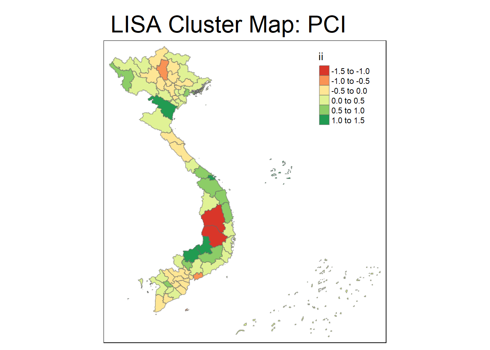
lisa_sig_2013 <- lisa_2013 %>%
filter(p_ii < 0.05) tm_shape(lisa_2013)+
tm_fill('ii')+
tm_borders(alpha=0.5)+
tm_view(set.zoom.limits = c(5,8))+
tm_layout(
main.title = "LISA Cluster Map: PCI",
main.title.size = 2
)Variable(s) "ii" contains positive and negative values, so midpoint is set to 0. Set midpoint = NA to show the full spectrum of the color palette.
tm_shape(lisa_2013)+
tm_polygons()+
tm_borders(alpha=0.5)+
tm_shape(lisa_sig_2013)+
tm_fill("mean")+
tm_borders(alpha=0.4)Warning: One tm layer group has duplicated layer types, which are omitted. To
draw multiple layers of the same type, use multiple layer groups (i.e. specify
tm_shape prior to each of them).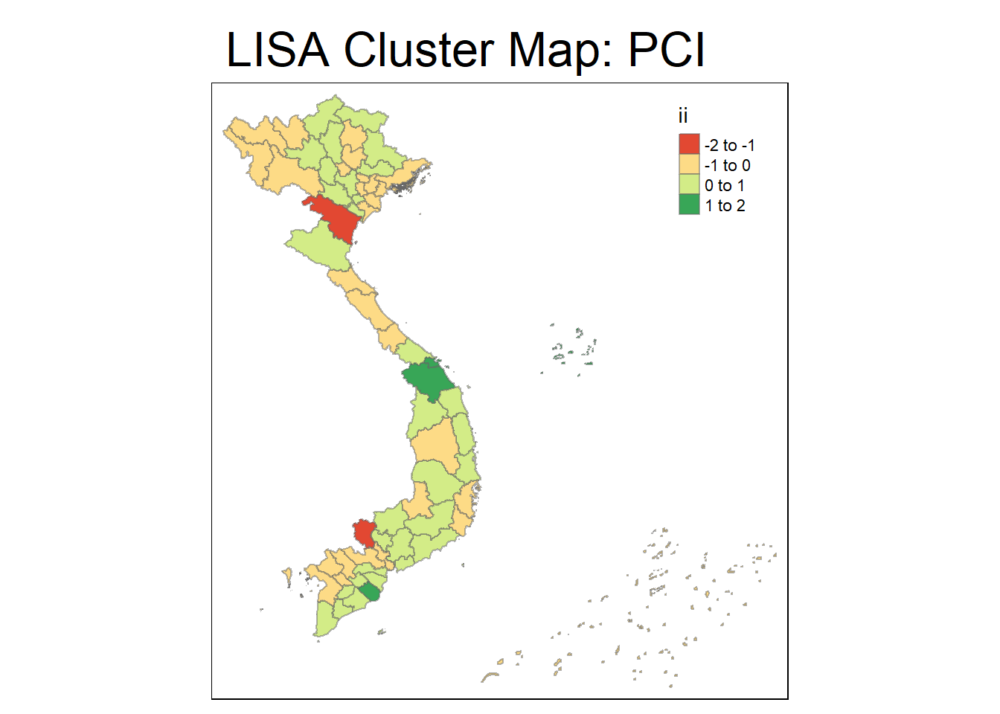
lisa_sig_2014 <- lisa_2014 %>%
filter(p_ii < 0.05) tm_shape(lisa_2014)+
tm_fill('ii')+
tm_borders(alpha=0.5)+
tm_view(set.zoom.limits = c(5,8))+
tm_layout(
main.title = "LISA Cluster Map: PCI",
main.title.size = 2
)Variable(s) "ii" contains positive and negative values, so midpoint is set to 0. Set midpoint = NA to show the full spectrum of the color palette.
tm_shape(lisa_2014)+
tm_polygons()+
tm_borders(alpha=0.5)+
tm_shape(lisa_sig_2014)+
tm_fill("mean")+
tm_borders(alpha=0.4)Warning: One tm layer group has duplicated layer types, which are omitted. To
draw multiple layers of the same type, use multiple layer groups (i.e. specify
tm_shape prior to each of them).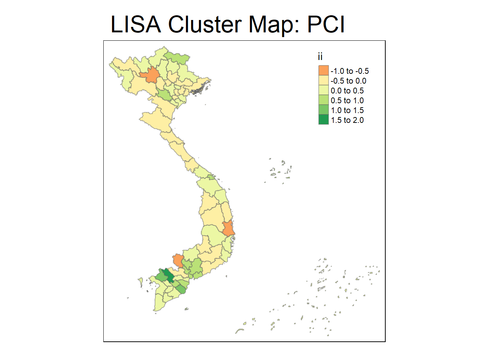
lisa_sig_2015 <- lisa_2015 %>%
filter(p_ii < 0.05) tm_shape(lisa_2015)+
tm_fill('ii')+
tm_borders(alpha=0.5)+
tm_view(set.zoom.limits = c(5,8))+
tm_layout(
main.title = "LISA Cluster Map: PCI",
main.title.size = 2
)Variable(s) "ii" contains positive and negative values, so midpoint is set to 0. Set midpoint = NA to show the full spectrum of the color palette.
tm_shape(lisa_2015)+
tm_polygons()+
tm_borders(alpha=0.5)+
tm_shape(lisa_sig_2015)+
tm_fill("mean")+
tm_borders(alpha=0.4)Warning: One tm layer group has duplicated layer types, which are omitted. To
draw multiple layers of the same type, use multiple layer groups (i.e. specify
tm_shape prior to each of them).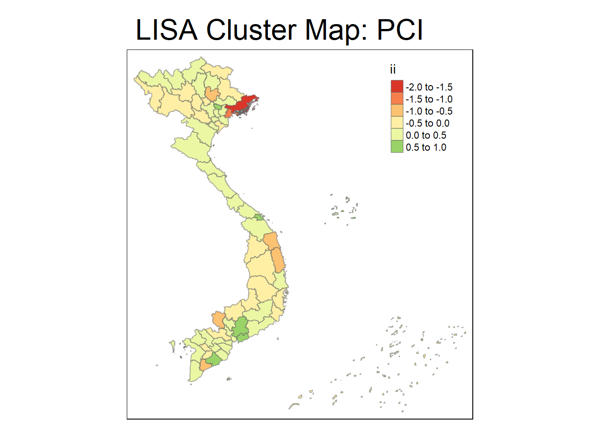
lisa_sig_2016 <- lisa_2016 %>%
filter(p_ii < 0.05) tm_shape(lisa_2016)+
tm_fill('ii')+
tm_borders(alpha=0.5)+
tm_view(set.zoom.limits = c(5,8))+
tm_layout(
main.title = "LISA Cluster Map: PCI",
main.title.size = 2
)Variable(s) "ii" contains positive and negative values, so midpoint is set to 0. Set midpoint = NA to show the full spectrum of the color palette.
tm_shape(lisa_2016)+
tm_polygons()+
tm_borders(alpha=0.5)+
tm_shape(lisa_sig_2016)+
tm_fill("mean")+
tm_borders(alpha=0.4)Warning: One tm layer group has duplicated layer types, which are omitted. To
draw multiple layers of the same type, use multiple layer groups (i.e. specify
tm_shape prior to each of them).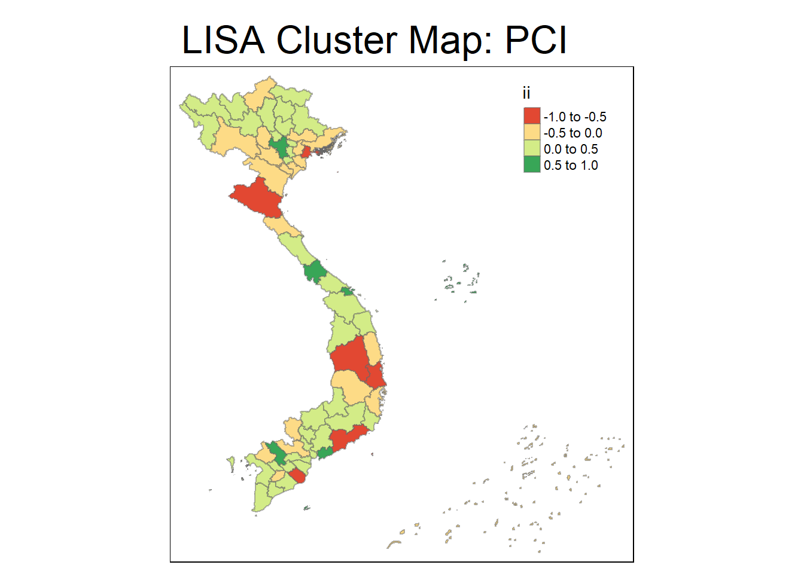
lisa_sig_2017 <- lisa_2017 %>%
filter(p_ii < 0.05) tm_shape(lisa_2017)+
tm_fill('ii')+
tm_borders(alpha=0.5)+
tm_view(set.zoom.limits = c(5,8))+
tm_layout(
main.title = "LISA Cluster Map: PCI",
main.title.size = 2
)Variable(s) "ii" contains positive and negative values, so midpoint is set to 0. Set midpoint = NA to show the full spectrum of the color palette.
tm_shape(lisa_2017)+
tm_polygons()+
tm_borders(alpha=0.5)+
tm_shape(lisa_sig_2017)+
tm_fill("mean")+
tm_borders(alpha=0.4)Warning: One tm layer group has duplicated layer types, which are omitted. To
draw multiple layers of the same type, use multiple layer groups (i.e. specify
tm_shape prior to each of them).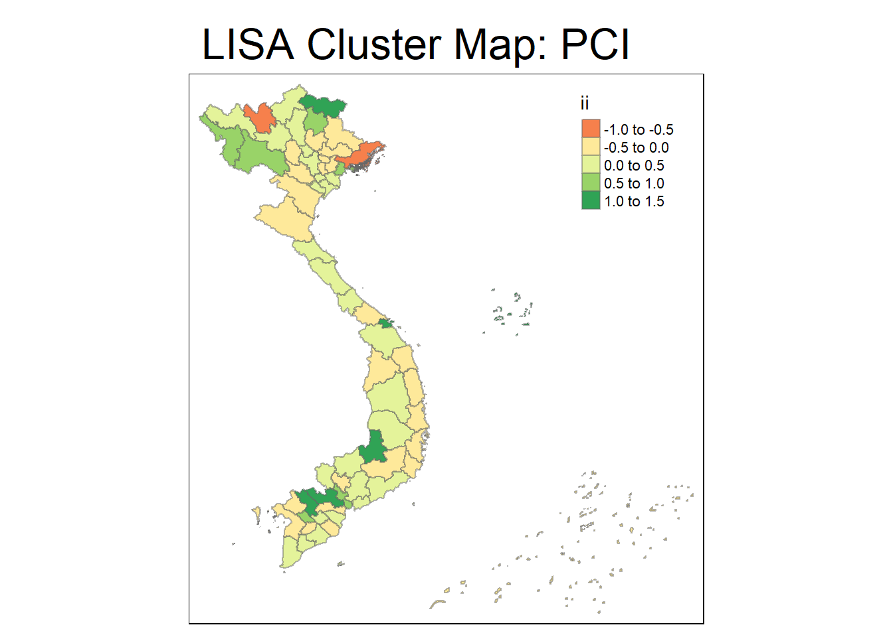
lisa_sig_2018 <- lisa_2018 %>%
filter(p_ii < 0.05)tm_shape(lisa_2018)+
tm_fill('ii')+
tm_borders(alpha=0.5)+
tm_view(set.zoom.limits = c(5,8))+
tm_layout(
main.title = "LISA Cluster Map: PCI",
main.title.size = 2
)Variable(s) "ii" contains positive and negative values, so midpoint is set to 0. Set midpoint = NA to show the full spectrum of the color palette.
tm_shape(lisa_2018)+
tm_polygons()+
tm_borders(alpha=0.5)+
tm_shape(lisa_sig_2018)+
tm_fill("mean")+
tm_borders(alpha=0.4)Warning: One tm layer group has duplicated layer types, which are omitted. To
draw multiple layers of the same type, use multiple layer groups (i.e. specify
tm_shape prior to each of them).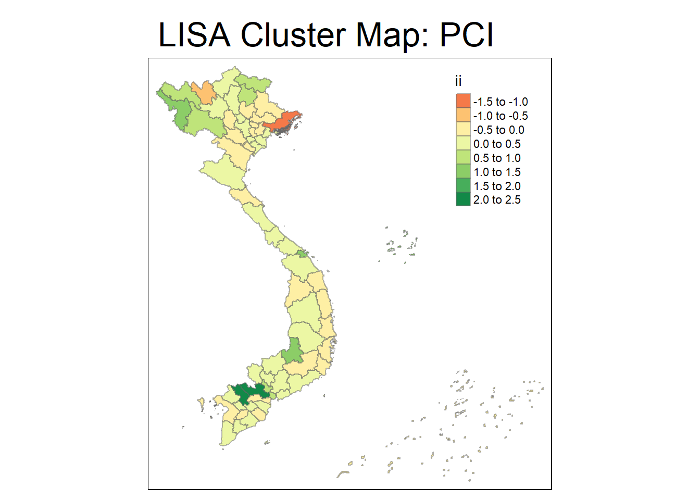
lisa_sig_2019 <- lisa_2019 %>%
filter(p_ii < 0.05)tm_shape(lisa_2019)+
tm_fill('ii')+
tm_borders(alpha=0.5)+
tm_view(set.zoom.limits = c(5,8))+
tm_layout(
main.title = "LISA Cluster Map: PCI",
main.title.size = 2
)Variable(s) "ii" contains positive and negative values, so midpoint is set to 0. Set midpoint = NA to show the full spectrum of the color palette.
tm_shape(lisa_2019)+
tm_polygons()+
tm_borders(alpha=0.5)+
tm_shape(lisa_sig_2019)+
tm_fill("mean")+
tm_borders(alpha=0.4)Warning: One tm layer group has duplicated layer types, which are omitted. To
draw multiple layers of the same type, use multiple layer groups (i.e. specify
tm_shape prior to each of them).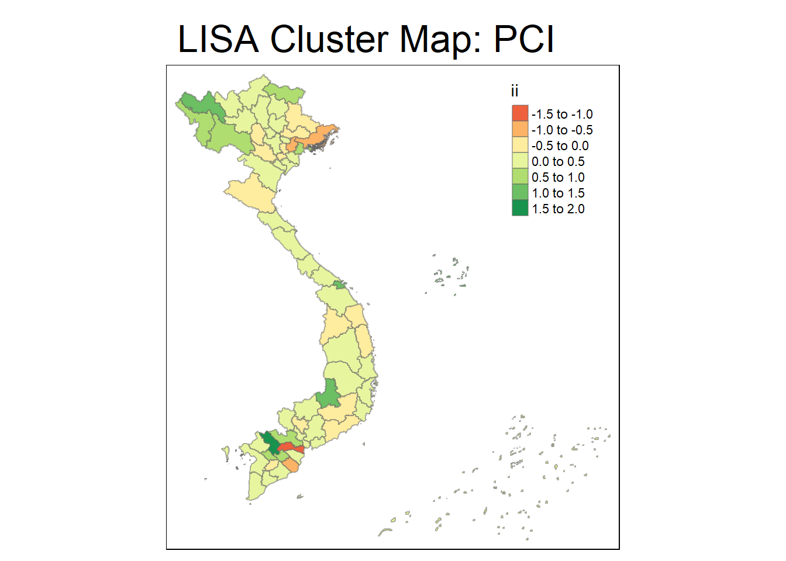
lisa_sig_2020 <- lisa_2020 %>%
filter(p_ii < 0.05) tm_shape(lisa_2020)+
tm_fill('ii')+
tm_borders(alpha=0.5)+
tm_view(set.zoom.limits = c(5,8))+
tm_layout(
main.title = "LISA Cluster Map: PCI",
main.title.size = 2
)Variable(s) "ii" contains positive and negative values, so midpoint is set to 0. Set midpoint = NA to show the full spectrum of the color palette.
tm_shape(lisa_2020)+
tm_polygons()+
tm_borders(alpha=0.5)+
tm_shape(lisa_sig_2020)+
tm_fill("mean")+
tm_borders(alpha=0.4)Warning: One tm layer group has duplicated layer types, which are omitted. To
draw multiple layers of the same type, use multiple layer groups (i.e. specify
tm_shape prior to each of them).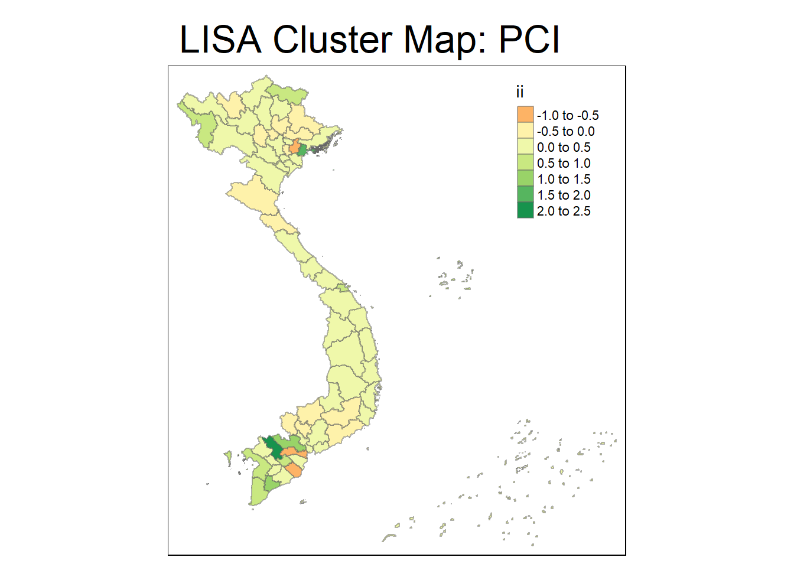
lisa_sig_2021 <- lisa_2021 %>%
filter(p_ii < 0.05) tm_shape(lisa_2021)+
tm_fill('ii')+
tm_borders(alpha=0.5)+
tm_view(set.zoom.limits = c(5,8))+
tm_layout(
main.title = "LISA Cluster Map: PCI",
main.title.size = 2
)Variable(s) "ii" contains positive and negative values, so midpoint is set to 0. Set midpoint = NA to show the full spectrum of the color palette.
tm_shape(lisa_2021)+
tm_polygons()+
tm_borders(alpha=0.5)+
tm_shape(lisa_sig_2021)+
tm_fill("mean")+
tm_borders(alpha=0.4)Warning: One tm layer group has duplicated layer types, which are omitted. To
draw multiple layers of the same type, use multiple layer groups (i.e. specify
tm_shape prior to each of them).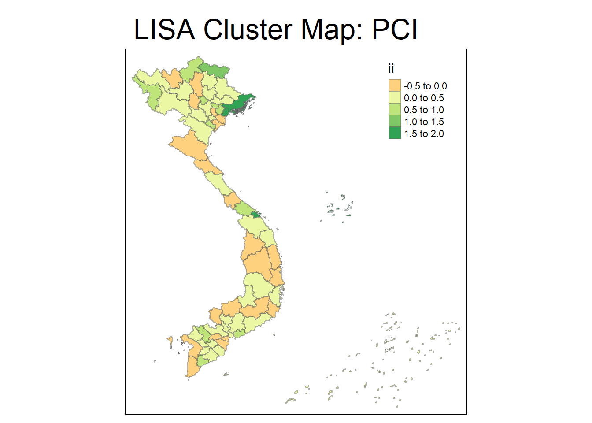
lisa_sig_2022 <- lisa_2022 %>%
filter(p_ii < 0.05) tm_shape(lisa_2022)+
tm_fill('ii')+
tm_borders(alpha=0.5)+
tm_view(set.zoom.limits = c(5,8))+
tm_layout(
main.title = "LISA Cluster Map: PCI",
main.title.size = 2
)Variable(s) "ii" contains positive and negative values, so midpoint is set to 0. Set midpoint = NA to show the full spectrum of the color palette.
tm_shape(lisa_2022)+
tm_polygons()+
tm_borders(alpha=0.5)+
tm_shape(lisa_sig_2022)+
tm_fill("mean")+
tm_borders(alpha=0.4)Warning: One tm layer group has duplicated layer types, which are omitted. To
draw multiple layers of the same type, use multiple layer groups (i.e. specify
tm_shape prior to each of them).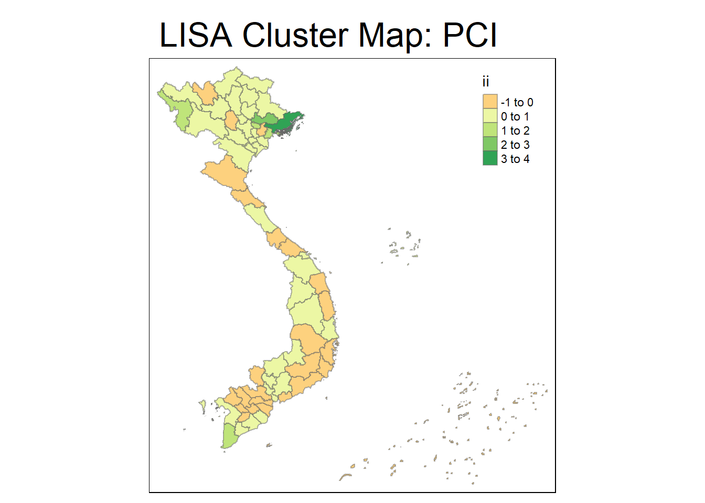
Below is my sdep lisa cluster
# Create the LISA cluster map
tm_shape(PCI_2022_data) +
tm_polygons("local_moran_2022",
title = "Local Moran's I (PCI Clusters)",
palette = "RdBu",
style = "cont") +
tm_layout(main.title = "LISA Cluster Map: PCI",
legend.outside = TRUE)Variable(s) "local_moran_2022" contains positive and negative values, so midpoint is set to 0. Set midpoint = NA to show the full spectrum of the color palette.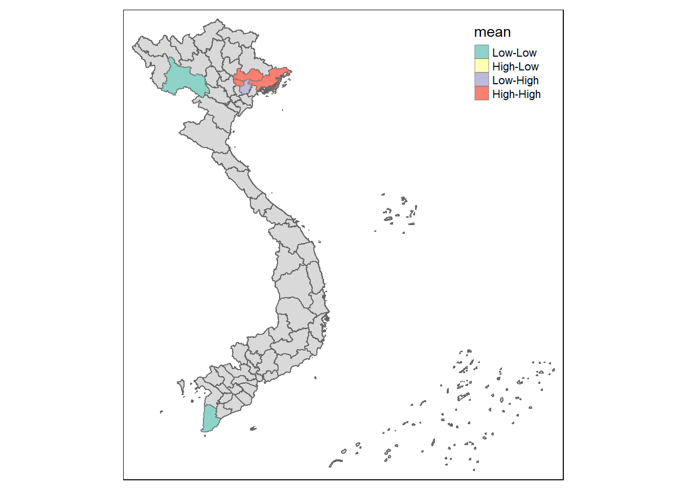
High-High Clusters (Hotspots): These areas, indicated by dark green, are likely the most economically vibrant regions. Urban centers or economically prosperous areas fall into this category.
Low-Low Clusters (Cold spots): Dark red regions indicate significant economic challenges, highlighting areas needing substantial policy intervention and development efforts.
Transitional Zones: Yellow to light green areas represent moderate competitiveness. These regions are improving but still require support to sustain growth.
Low-Low Clusters (Light Blue): These regions have low values surrounded by other low-value regions. They are likely areas with economic or developmental challenges.
High-Low Clusters (Green): High-value regions surrounded by low-value areas. These might be urban centers or economically prosperous areas adjacent to less developed regions, indicating a stark socio-economic contrast.
Low-High Clusters (Purple): Low-value regions surrounded by high-value areas. These could be rural or underdeveloped regions located near more prosperous areas.
High-High Clusters (Red): High-value areas surrounded by other high-value regions. These are likely major urban centers or regions with significant economic activity.
Computing local Gi* statistics for PCI
wm_idw_2022 <- PCI_2022_data %>%
mutate(nb=st_contiguity(geometry),
wts = st_inverse_distance(nb,geometry,
scale=1,
alpha=1),
.before = 1)! Polygon provided. Using point on surface.Warning: There was 1 warning in `stopifnot()`.
ℹ In argument: `wts = st_inverse_distance(nb, geometry, scale = 1, alpha = 1)`.
Caused by warning in `st_point_on_surface.sfc()`:
! st_point_on_surface may not give correct results for longitude/latitude dataCalculate Neighbor List:
st_contiguity(geometry)identifies neighboring provinces based on their geometry. This creates a list that shows which provinces are contiguous to each other.
Compute Weights Using Inverse Distance:
st_inverse_distance(nb, geometry, scale=1, alpha=1)calculates the inverse distance weights based on the contiguity of provinces:nb: The neighbors list created from thest_contiguityfunction.geometry: The geometrical representation of the provinces.scale: This parameter controls the scaling of the distance; a value of 1 typically means that distances are used directly.alpha: This parameter determines how much influence nearby provinces have compared to those farther away. Analphaof 1 indicates a direct inverse distance weighting, where closer provinces have significantly more influence than those farther away.
Store New Columns at the Beginning:
- The
.before = 1argument ensures that the newly calculated columns (nbfor neighbors andwtsfor weights) are placed at the beginning of the dataset, making them readily accessible for subsequent analysis.
- The
Overall Purpose
The resulting dataset wm_idw_2022 now contains:
A
nbcolumn indicating the neighboring provinces for each province.A
wtscolumn that holds the inverse distance weights, reflecting the spatial relationships among provinces based on their distances.
This setup is useful for spatial interpolation or analysis, particularly in creating maps or conducting further spatial econometric modeling that accounts for the influence of nearby provinces on each other.
HCSA_2022 <- wm_idw_2022 %>%
mutate(local_Gi = local_gstar_perm(
The.Weighted.PCI.Score,nb,wt,nsim=99),
.before=1) %>%
unnest(local_Gi)The resulting dataset HCSA_2022 now contains:
The original data from
wm_idw_2022, including the weighted PCI scores and the neighbors list.A new column
local_Githat contains the local Getis-Ord Gi* statistics for each province, reflecting the degree of spatial clustering of high or low values in the weighted PCI scores.
This setup allows for further analysis of spatial patterns in competitiveness scores, helping to identify areas of high performance (hot spots) or low performance (cold spots) in the context of provincial competitiveness in Vietnam for 2022.
Visualising hot spot and cold spot areas
HCSA_sig_2022 <- HCSA_2022 %>%
filter(p_sim<0.05)
tmap_mode("plot")tmap mode set to plottingtm_shape(HCSA_2022)+
tm_polygons()+
tm_borders(alpha=0.5)+
tm_shape(HCSA_sig_2022)+
tm_fill("gi_star")+
tm_borders(alpha=0.4)Warning: One tm layer group has duplicated layer types, which are omitted. To
draw multiple layers of the same type, use multiple layer groups (i.e. specify
tm_shape prior to each of them).Variable(s) "gi_star" contains positive and negative values, so midpoint is set to 0. Set midpoint = NA to show the full spectrum of the color palette.
This map effectively visualizes significant hotspot areas in northern Vietnam, showing where high values of the analyzed variable (possibly conflict data, health statistics, or economic factors) cluster spatially. The stronger hotspots are concentrated around the Red River Delta area, suggesting important spatial trends. No cold spots are observed, indicating that the focus is primarily on regions with high-value clustering.
For a geospatial analyst, this map offers insights into spatial patterns that could inform policy decisions, resource allocation, or further investigation into why certain areas exhibit higher intensity for the variable being analyzed.
Below is my sdep for GI hotspot
# Calculate Getis-Ord Gi* statistic for each region
gi_star <- localG(PCI_2022_data$The.Weighted.PCI.Score, lw)
# Add Gi* values to the data
PCI_2022_data$gi_star <- as.numeric(gi_star)
# Create a hotspot map
tm_shape(PCI_2022_data) +
tm_polygons("gi_star",
title = "Getis-Ord Gi* (PCI Hotspots)",
palette = "YlOrRd",
style = "cont") +
tm_layout(main.title = "Hotspot Analysis: PCI",
legend.outside = TRUE)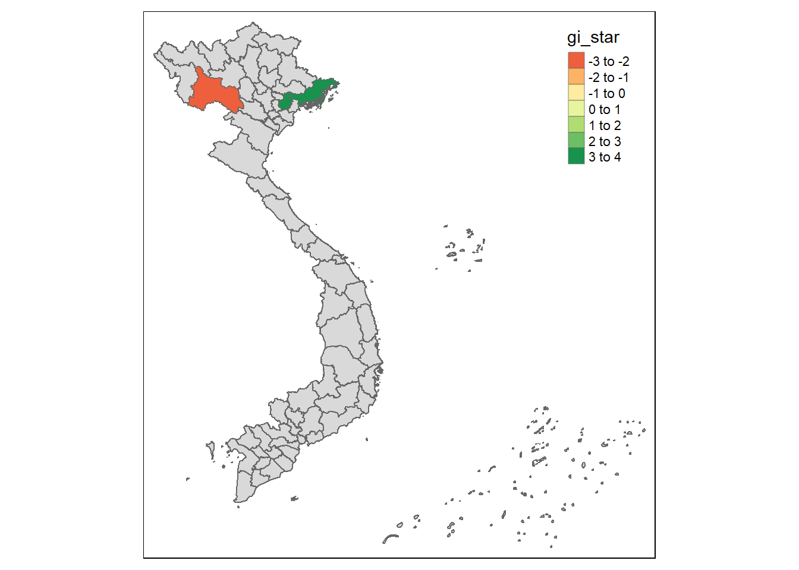
Getis-Ord Gi Statistic (Hotspot and Cold Spot Identification):*
Hotspots (Red Areas):
Provinces colored in red show significant clustering of high PCI values, meaning these regions exhibit high competitiveness in business and economic performance.
This suggests these provinces offer favorable conditions for businesses, such as efficient government services, good infrastructure, or policies that attract investment.
Key regions with high competitiveness (hotspots) are:
Northern Vietnam: Several provinces show up as red, indicating this region is a competitive hub.
Central Vietnam: Another area of high competitiveness, likely with favorable governance or economic policies that contribute to its strong PCI score.
Cold Spots (Dark Areas):
The map also shows cold spots (with negative Gi* values), which represent provinces with low competitiveness. These are regions where low PCI scores cluster, indicating they are less attractive for business or have poor economic governance.
A few provinces in central Vietnam fall into this category, suggesting these areas might face challenges such as bureaucracy, underdeveloped infrastructure, or less favorable conditions for economic growth.
Intermediate Areas (Yellow to Orange):
- Provinces in yellow to orange have moderate PCI values, indicating no significant clustering of competitiveness. These areas are neither clear hotspots nor cold spots but fall somewhere in the middle in terms of their competitive standing.
Significant Regional Trends:
Northern Vietnam:
- The northern provinces are a clear hotspot for competitiveness, particularly around the capital region of Hanoi. This likely reflects the concentration of government institutions, better infrastructure, and higher foreign direct investment (FDI) in the region.
Central Vietnam:
- The central regions of Vietnam are somewhat mixed, with both cold spots and hotspots present. Certain areas are performing well, while others lag in terms of competitiveness.
Southern Vietnam:
- A few provinces in the southern part of Vietnam, particularly around the Mekong Delta and near Ho Chi Minh City, are moderately competitive but don’t form strong clusters of high or low competitiveness.
Insights for Policy and Business:
Hotspot Areas (Red) should be regarded as prime locations for further investment and expansion, given their strong competitive environment.
Cold Spot Areas (Dark) may require policy interventions, such as improvements in governance, infrastructure, or business regulations to enhance competitiveness.
Yellow to Orange Areas may be transitioning or developing regions where businesses might experience mixed results depending on local factors.
Conclusion:
This map is a useful tool for understanding the spatial patterns of competitiveness in Vietnam’s provinces. The identified hotspots in the north and central parts of the country represent regions where businesses are thriving, and the business environment is supportive of economic growth. Meanwhile, the cold spots point to provinces that may be struggling and in need of policy reforms or infrastructure investments to boost their competitiveness. This type of analysis can inform government initiatives, business decisions, and investments by highlighting where competitive advantages or disadvantages are geographically concentrated.
Preparing data for LISA of industrial production
- Ind Prod Data : These objects load Industrial Production data for Vietnam for each year from 2012 to 2022. Each CSV file contains aspatial (non-geographic) data that includes indicators of industrial production at the provincial level. By reading the data for each year separately, it prepares for a time-series analysis of industrial production metrics across provinces, allowing insights into trends or patterns in competitiveness and governance over time.
ind_prod <- read.csv('data/aspatial/industrial_prod.csv')Joining data
This code joins the spatial boundary data and Industrial Production by:
Merging Data: The
left_joinfunction mergesboundary_datawith Industrial Production using theprovincecolumn as a common key. This results in a new Industrial Productiondataset that includes spatial information (geometry) fromboundary_dataalong with the Industrial Productionindicators for 2012-2022. Theleft_joinensures that all records fromboundary_dataare kept, and matching rows from Industrial Productiondata are added.Removing Rows with Missing Data:
drop_naremoves any rows withNAvalues from Industrial Productiondata, likely to ensure that only provinces with complete Industrial Production data and spatial information are retained for further analysis. This prevents issues that could arise from missing values during analysis or visualization.
This approach creates a complete dataset with both spatial and Industrial Productiondata for 2012-2022, facilitating spatial analysis and mapping of competitiveness indicators across Vietnamese provinces.
ind_prod <- boundary_data %>%
left_join(ind_prod, by = "province")
ind_prod <- drop_na(ind_prod)Computing LISA
These codes enhances the Industrial Production 2012-2022 dataset by adding spatial contiguity and weight information as new columns:
Calculate Neighbor List:
st_contiguity(geometry)identifies neighboring provinces for each province based on contiguity, and the result is stored in the new columnnb. This function creates a list where each province has a record of which other provinces are contiguous to it.Assign Weights to Neighbors:
st_weights(nb, style="W")calculates a row-standardized weight for each neighbor innb, stored in the new columnwt. Thestyle="W"parameter means that the weights for each province’s neighbors will sum to 1. This type of weight structure is useful for spatial analysis, as it standardizes the influence each neighboring province has on the focal province.Place Columns at the Beginning: The
.before = 1argument ensures that the new columns (nbandwt) are positioned at the beginning of the dataset, making them easy to access and review during analysis.
This setup embeds spatial structure directly into the Industrial Production dataset, preparing it for further spatial econometric analysis by linking each province with its neighbors and assigning standardized weights.
The 2nd code performs Local Moran’s I analysis on the PCI data for 2012-2022 to identify spatial autocorrelation at the provincial level:
Calculate Local Moran’s I:
local_moran(industrial_production, nb, wt, nsim=99)computes Local Moran’s I statistic for the Industrial Production variable, which represents the Industrial Production for each province. This function assesses the degree of spatial autocorrelation locally, identifying clusters and outliers of high or low Industrial Production values relative to neighboring provinces:nb: The neighbors list (spatial contiguity) column created earlier.wt: The spatial weights column.nsim=99: Sets the number of simulations to 99, used for significance testing to evaluate if the observed spatial patterns are statistically significant.
Store Results in
local_moranColumn: This result is saved as a new columnlocal_moran. The.before=1argument ensures thatlocal_moranis placed at the start of the data frame for easy access.Unnest the Results:
unnest(local_moran)expands thelocal_morancolumn if it contains nested data (e.g., lists of statistics for each province), spreading them into separate columns. This makes the Local Moran’s I values for each province more accessible for further analysis or visualization.
The resulting lisa_ind_2012 dataset provides Local Moran’s I values for each province, allowing me to map spatial clusters and test for the presence of spatially structured patterns in Industrial Production values across Vietnam. And I repeat the above steps for the remaining years
wm_q_ind <- ind_prod %>%
mutate(nb=st_contiguity(geometry),
wt=st_weights(nb,
style="W"),
.before = 1)lisa_ind_2012 <- wm_q_ind %>%
mutate(local_moran = local_moran(
Y2012,nb,wt,nsim=99),
.before=1) %>%
unnest(local_moran)lisa_ind_2013 <- wm_q_ind %>%
mutate(local_moran = local_moran(
Y2013,nb,wt,nsim=99),
.before=1) %>%
unnest(local_moran)lisa_ind_2014 <- wm_q_ind %>%
mutate(local_moran = local_moran(
Y2014,nb,wt,nsim=99),
.before=1) %>%
unnest(local_moran)lisa_ind_2015 <- wm_q_ind %>%
mutate(local_moran = local_moran(
Y2015,nb,wt,nsim=99),
.before=1) %>%
unnest(local_moran)lisa_ind_2016 <- wm_q_ind %>%
mutate(local_moran = local_moran(
Y2016,nb,wt,nsim=99),
.before=1) %>%
unnest(local_moran)lisa_ind_2017 <- wm_q_ind %>%
mutate(local_moran = local_moran(
Y2017,nb,wt,nsim=99),
.before=1) %>%
unnest(local_moran)lisa_ind_2018 <- wm_q_ind %>%
mutate(local_moran = local_moran(
Y2018,nb,wt,nsim=99),
.before=1) %>%
unnest(local_moran)lisa_ind_2019 <- wm_q_ind %>%
mutate(local_moran = local_moran(
Y2019,nb,wt,nsim=99),
.before=1) %>%
unnest(local_moran)lisa_ind_2020 <- wm_q_ind %>%
mutate(local_moran = local_moran(
Y2020,nb,wt,nsim=99),
.before=1) %>%
unnest(local_moran)lisa_ind_2021 <- wm_q_ind %>%
mutate(local_moran = local_moran(
Y2021,nb,wt,nsim=99),
.before=1) %>%
unnest(local_moran)lisa_ind_2022 <- wm_q_ind %>%
mutate(local_moran = local_moran(
Y2022,nb,wt,nsim=99),
.before=1) %>%
unnest(local_moran)lisa_ind_2023 <- wm_q_ind %>%
mutate(local_moran = local_moran(
Y2012,nb,wt,nsim=99),
.before=1) %>%
unnest(local_moran)Visualising LISA of Industrial Production
tm_shape(lisa_ind_2012)+
tm_fill('ii')+
tm_borders(alpha=0.5)+
tm_view(set.zoom.limits = c(3,6))+
tm_layout(
main.title = "local Moran's I of G",
main.title.size = 1
)Variable(s) "ii" contains positive and negative values, so midpoint is set to 0. Set midpoint = NA to show the full spectrum of the color palette.
tm_shape(lisa_ind_2013)+
tm_fill('ii')+
tm_borders(alpha=0.5)+
tm_view(set.zoom.limits = c(3,6))+
tm_layout(
main.title = "local Moran's I of G",
main.title.size = 1
)Variable(s) "ii" contains positive and negative values, so midpoint is set to 0. Set midpoint = NA to show the full spectrum of the color palette.
tm_shape(lisa_ind_2014)+
tm_fill('ii')+
tm_borders(alpha=0.5)+
tm_view(set.zoom.limits = c(3,6))+
tm_layout(
main.title = "local Moran's I of G",
main.title.size = 1
)Variable(s) "ii" contains positive and negative values, so midpoint is set to 0. Set midpoint = NA to show the full spectrum of the color palette.
tm_shape(lisa_ind_2015)+
tm_fill('ii')+
tm_borders(alpha=0.5)+
tm_view(set.zoom.limits = c(3,6))+
tm_layout(
main.title = "local Moran's I of G",
main.title.size = 1
)Variable(s) "ii" contains positive and negative values, so midpoint is set to 0. Set midpoint = NA to show the full spectrum of the color palette.
tm_shape(lisa_ind_2016)+
tm_fill('ii')+
tm_borders(alpha=0.5)+
tm_view(set.zoom.limits = c(3,6))+
tm_layout(
main.title = "local Moran's I of G",
main.title.size = 1
)Variable(s) "ii" contains positive and negative values, so midpoint is set to 0. Set midpoint = NA to show the full spectrum of the color palette.
tm_shape(lisa_ind_2017)+
tm_fill('ii')+
tm_borders(alpha=0.5)+
tm_view(set.zoom.limits = c(3,6))+
tm_layout(
main.title = "local Moran's I of G",
main.title.size = 1
)Variable(s) "ii" contains positive and negative values, so midpoint is set to 0. Set midpoint = NA to show the full spectrum of the color palette.
tm_shape(lisa_ind_2018)+
tm_fill('ii')+
tm_borders(alpha=0.5)+
tm_view(set.zoom.limits = c(3,6))+
tm_layout(
main.title = "local Moran's I of G",
main.title.size = 1
)Variable(s) "ii" contains positive and negative values, so midpoint is set to 0. Set midpoint = NA to show the full spectrum of the color palette.
tm_shape(lisa_ind_2019)+
tm_fill('ii')+
tm_borders(alpha=0.5)+
tm_view(set.zoom.limits = c(3,6))+
tm_layout(
main.title = "local Moran's I of G",
main.title.size = 1
)Variable(s) "ii" contains positive and negative values, so midpoint is set to 0. Set midpoint = NA to show the full spectrum of the color palette.
tm_shape(lisa_ind_2020)+
tm_fill('ii')+
tm_borders(alpha=0.5)+
tm_view(set.zoom.limits = c(3,6))+
tm_layout(
main.title = "local Moran's I of G",
main.title.size = 1
)Variable(s) "ii" contains positive and negative values, so midpoint is set to 0. Set midpoint = NA to show the full spectrum of the color palette.
tm_shape(lisa_ind_2021)+
tm_fill('ii')+
tm_borders(alpha=0.5)+
tm_view(set.zoom.limits = c(3,6))+
tm_layout(
main.title = "local Moran's I of G",
main.title.size = 1
)Variable(s) "ii" contains positive and negative values, so midpoint is set to 0. Set midpoint = NA to show the full spectrum of the color palette.
tm_shape(lisa_ind_2022)+
tm_fill('ii')+
tm_borders(alpha=0.5)+
tm_view(set.zoom.limits = c(3,6))+
tm_layout(
main.title = "local Moran's I of G",
main.title.size = 1
)Variable(s) "ii" contains positive and negative values, so midpoint is set to 0. Set midpoint = NA to show the full spectrum of the color palette.
tm_shape(lisa_ind_2023)+
tm_fill('ii')+
tm_borders(alpha=0.5)+
tm_view(set.zoom.limits = c(3,6))+
tm_layout(
main.title = "local Moran's I of G",
main.title.size = 1
)Variable(s) "ii" contains positive and negative values, so midpoint is set to 0. Set midpoint = NA to show the full spectrum of the color palette.
Computing local Gi* statistics for Industrial Production
# Create a spatial weights matrix
coords_prod <- st_coordinates(st_centroid(ind_prod))Warning: st_centroid assumes attributes are constant over geometriesnb_prod <- knn2nb(knearneigh(coords_prod, k = 4)) # K-nearest neighbors
lw_prod <- nb2listw(nb_prod, style = "W")# Calculate Getis-Ord Gi* statistic for each region
gi_star_prod <- localG(ind_prod$Y2022, lw_prod)
# Add Gi* values to the data
ind_prod$gi_star_prod <- as.numeric(gi_star_prod)Visualising Hotspot Map
# Create a hotspot map
tm_shape(ind_prod) +
tm_polygons("gi_star_prod",
title = "Getis-Ord Gi* (Indistrial Production Hotspots)",
palette = "YlOrRd",
style = "cont") +
tm_layout(main.title = "Hotspot Analysis: Industrial Production",
legend.outside = TRUE)